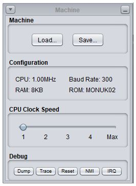
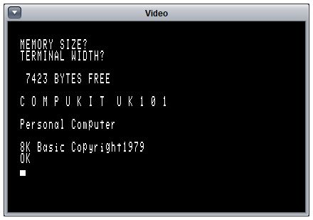
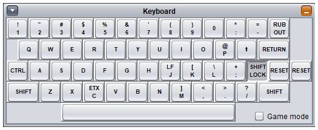
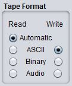

|
The UK101 interface can be started by running the simulator JAR file or by
running the uk101.Main class within the JAR.
java -jar uk101-n.n.n.jar [options] [machine]orjava uk101.Main [options] [machine]
machine- A previously saved machine image.
-look lookandfeel- The name of the Java GUI look-and-feel to use. By default the standard platform look-and-feel will be used. Other look-and-feels that may be available (depending on operating system and Java version) include:
metal,steel,ocean,windows,classic,motif,gtk,macandnimbus.-c, -configuration configFile- The name of a properties file containing system configuration properties.
-p, -properties systemProps- One or more system configuration properties. Configuration properties are described in system configuration.
The graphical interface displays a main window containing several smaller internal windows representing the various hardware and devices that form the UK101 simulation. These windows can be moved around and resized (or minimized) as required. The current layout can be saved as part of a machine image and restored in a later run.
Most interaction will take place with the keyboard and with the cassette player used for saving and loading programs to and from storage tapes.
When the simulator starts up it can load a pre-saved machine image containing the complete RAM memory contents, the system configuration and the size, position any layout of all the application windows.
The image can be provided as a parameter when starting the application or it may be loaded later using the machine control panel window. If no image is provided a default window layout will be used.
To close the system just close the main window. Make sure you save anything you want to keep before you do this.
|  | The machine control panel provides details of the
current machine configuration, provides the buttons to load and save
complete machine images, a slider for setting the CPU clock speed and
some simple debugging functions.
The Load... and Save... buttons are used to save the
current machine image or restore a previously saved machine image.
A machine image consists of the complete RAM memory and may also include the
system configuration and the the size, position and layout of all the windows
on the screen.
They are typically saved as files with an extension of
" Some sample machine images for some of the games are provided
in the The CPU Clock Speed slider allows the CPU speed to be adjusted while the emulation is running. Faster clock speeds can make programs load faster, but may make them hard to use as program timings often used simple loops. Setting the slider to Max will cause the emulation to run as fast as possible. |
At the bottom of the window are a number of debug buttons. Pressing the Dump button will produce a system memory dump (this can be formatted and displayed using the dump file formatter utility). Toggling the Trace button will turn on and off the system instruction trace (this can be formatted and displayed using the trace file formatter utility). Pressing the Reset button will perform a hardware reset of the CPU. Pressing the NMI or IRQ buttons will raise the corresponding CPU interrupt.
|  | The video display shows the computer output.
By default this displays 16 lines of 48 characters which was
typically what was seen on a normal TV plugged into a standard
UK101.
Machines were often modified to improve the video with a 32-line
display being common.
A number of aspects of the video display can be changed using the video configuration properties, including the number of lines displayed, the physical size of the video output and the screen colour, which can be set to:
|
|  | The keyboard shows an image of the keys, key-markings
and the key-layout from the real machine.
You can operate the keyboard either by clicking the appropriate keys with
the mouse, or by typing on the PC keyboard.
In general the UK101 needs all its characters in UPPERCASE, so it is important to ensure that the SHIFT LOCK key is always locked in the down position. This should be the default when the system is started up. |
Note that the machine reads the keyboard by polling and quite a lot of instructions need to be executed to decode any one keypress - if you type too fast you may find some keystrokes get missed.
Game mode may be needed when running programs that interact directly with the keyboard, most games for example, as the mapping done in the default mode is likely to confuse things.
To the right of the SHIFT LOCK are two keys marked RESET. These are used to perform a hardware reset on the CPU and on a real UK101 you need to press both keys together to reset (the idea being that you don't press one accidentally while stabbing for the RETURN key). To emulate this in the simulator you can only do a reset by clicking one of the RESET keys (either one) with both mouse buttons at once.
| The cassette recorder allows programs to be loaded
from and saved to cassette tapes.
In this simulation "cassette tapes" are simply files on the
PC containing the bytes that would have been stored on a cassette.
To use the cassette recorder first press the Open... button and select a tape to load or enter a new file name if you going to be saving a program. To start the tape playing (ready for loading) press the Play button; to start the tape recording (ready for saving) press the Rec button; to stop playing or recording press the Stop button. |
You don't have to be too careful about when you press the Play,
Rec or Stop buttons.
For example you can press Play before you type the
LOAD command in BASIC and data will not be read from the
cassette player until the machine needs it - a definite advantage
over a real system.
Similarly if you press Rec nothing will actually be saved
until the SAVE command lists data to the output.
The cassette player will automatically stop if it is left
doing nothing in Play or Rec mode for about 15 seconds.
 When opening a new tape you will need to select the correct tape format to be used for reading and/or writing.
The default setting for input tapes is Automatic which will allow the system to pick the correct format based on the contents of the tape. Most of the time this works well and is exactly what you want.
The default setting for output tapes is ASCII which is the best setting for saving BASIC programs as it is a format which can be easily viewed and edited on the PC. If you are saving raw data or saving machine code programs you may want to select the Binary output format. The Audio option saves data as an audio WAV file in encoded in Kansas City Standard format - this may be useful if you want to create a real CD or tape to load on a real UK101.
When a tape is playing or recording the format selected will be displayed to the right of the tape name.
The UK101 was very heavily based on the Ohio Superboard II from the US and has an almost identical machine architecture and design. This means that, by using the Monitor, BASIC and Character Generator ROMs from the Superboard machine, the simulator can emulate the Superboard II just as well as the UK101.
The two main differences are:
The video display on the Superboard was arranged as 32 rows by 32 columns (rather than 16 x 64) and a typical TV would probably show around 24 characters per line. |
The keyboard included a couple of extra keys (marked ESC and REPEAT) and the key to the left of the RETURN key was marked LINE FEED. When running with the Superboard keyboard layout, the LINE FEED is mapped to the PC backslash key (which is in approximately the right place on a US keyboard) and the REPEAT key is mapped to the PC Insert key. |
These differences, together with the necessary ROM files, can be
set in the system configuration.
A sample set of ROMs and a sample
Superboard
configuration properties file can be found in the
samples/properties directory.
| Tim Baldwin January 2014 tjb101@tinymail.co.uk |
Return to index
© Tim Baldwin 2010,2014 |